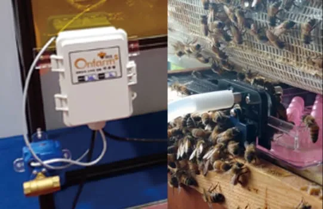
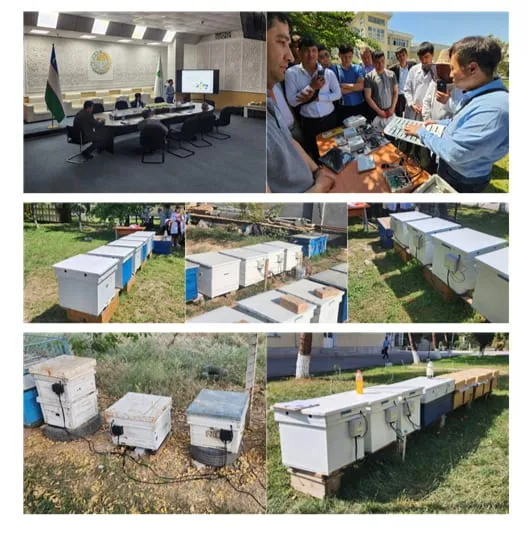

한농대에서 타슈켄트 농대까지, 비온팜의 양봉 교육 협력
전문인력 양성 협약과 수강생 현장실습, 귀농 청년 강의, 해외 농업대학 스마트 벌통 설치

스마트 양봉 기업 온팜(브랜드 비온팜)은 2021년 2월 한국농수산대학교(한농대)와 양봉 전문인력 양성 협약을 맺었다고 2025년 소개서에서 밝혔다. 이후 한농대 수강생 현장실습, 우즈베키스탄 타슈켄트농업대학교(TSAU) 스마트 벌통 설치 등으로 대학과의 교육·연구 협력을 이어 갔다. 비온팜은 청년 귀농 교육에서도 ‘지속가능한 양봉’을 주제로 강의했다.
한농대 협약과 현장실습
비온팜 2025년 소개서 개발 경과에 따르면 한농대와의 협약 시점은 2021년 2월이다. 항목 이름은 ‘스마트 양봉 전문인력 양성을 위한 협약체결’이다. 식품저널은 2021년 2월 23일 두 기관이 양봉 전문가 양성을 위한 기본 교육과 창업 모델 제시, 양봉 실습, 스마트 양봉 교육 추진 등의 분야에서 협력할 계획이라고 보도했다. 비온팜은 이 보도를 홈페이지 뉴스 게시판에 옮겨 실었다.
비온팜은 2023년 5월 한농대 ‘양봉산물생산 및 실습’ 수강생을 대상으로 현장실습을 진행했다. 홈페이지 뉴스 게시판에는 “양봉을 공부하는 학생들과 만나는 특별한 시간이었습니다”라는 소감을 남겼다. 실습 인원과 장소, 내용은 밝히지 않았다.
귀농 청년 강의
비온팜은 2023년 12월 6일 홈페이지 뉴스 게시판 글에서 ‘지속가능한 양봉’을 주제로 ‘청년 귀농 장기 교육’ 강의에 참여했다고 밝혔다. 이 교육은 농림축산식품부와 농림수산식품교육문화정보원이 민간 교육기관을 선정해 진행한다고 비온팜은 소개했다. 귀농과 창농에 관심이 있는 청년을 선발한다고 했다. 강의에 나선 이유로는 청년 귀농자의 안정적인 농업·농촌 정착과 창업 활성화를 들었다. 강의 시기와 장소는 밝히지 않았다.
타슈켄트 농대의 스마트 벌통
비온팜은 TSAU와 우즈베키스탄 양봉농장 2곳에 스마트 벌통을 설치했다며 2023년 12월 11일 홈페이지 갤러리에 사진을 올렸다. 이 벌통이 TSAU 학생들의 연구와 과제 활동에 도움이 되기를 바란다고도 적었다. 2025년 소개서 개발 경과에는 2023년 4월 ‘타슈켄트농대(TSAU)-안동대 꿀벌 연구소 모니터링 개시’ 항목이 있다. 홈페이지 회사 소개의 ‘2023 비온팜 주요 계획’에도 TSAU의 스마트 양봉 연구 참여가 들어 있다.

사진: 비온팜이 홈페이지 갤러리에 올린 우즈베키스탄 스마트 벌통 설치 모습 (자료: 비온팜)비온팜은 2023년 11월 9일 홈페이지 유튜브 게시판에 우즈베키스탄 비온팜 ‘스마트 벌통’ 설치 (2023 대한민국 농업박람회 세미나) 영상을 올렸다.
자료: 비온팜 홈페이지(2026년 10월 8일 확인), 비온팜 2025 소개서, 식품저널(2021년 2월 23일)
저작권자 © 윙윙통신 무단 전재 및 재배포 금지